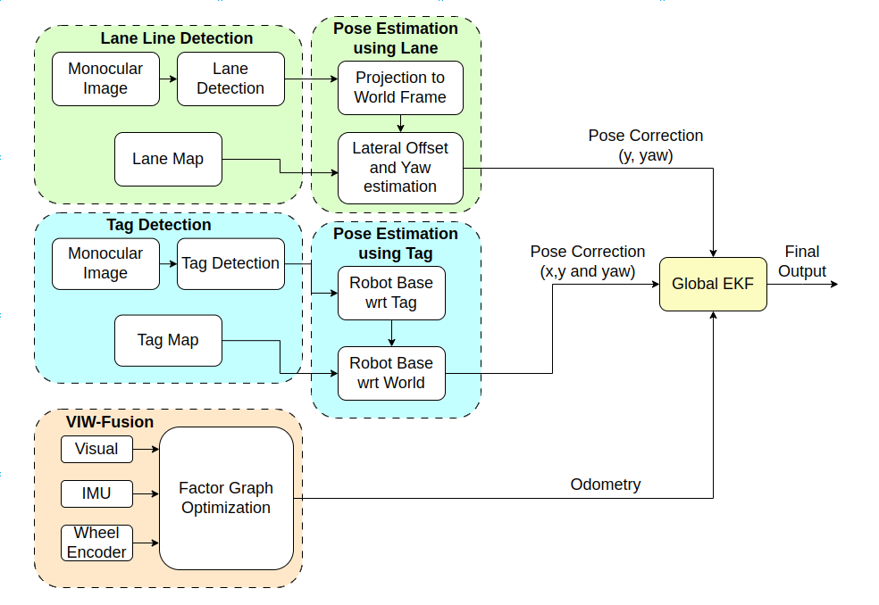
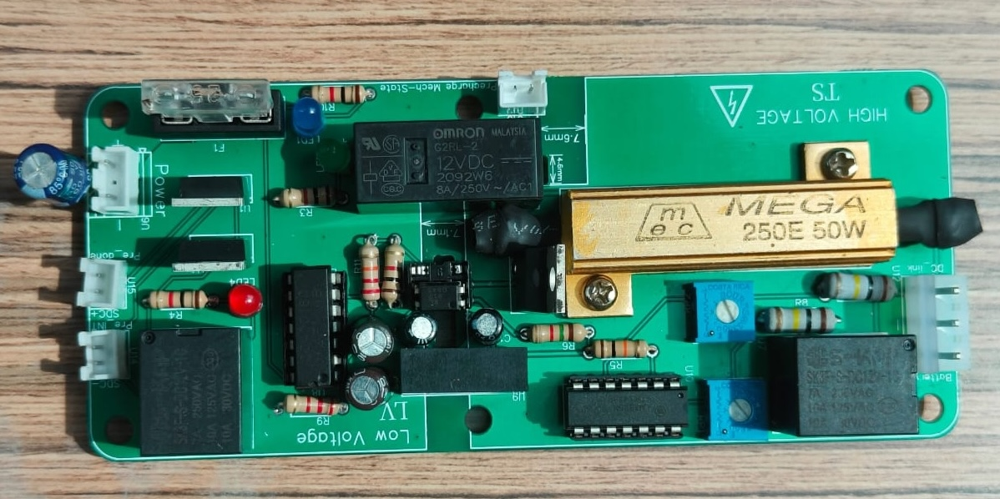
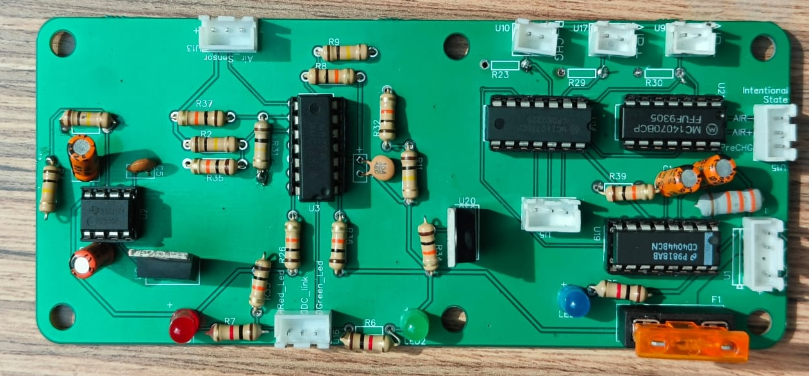
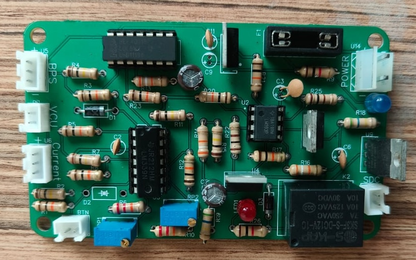
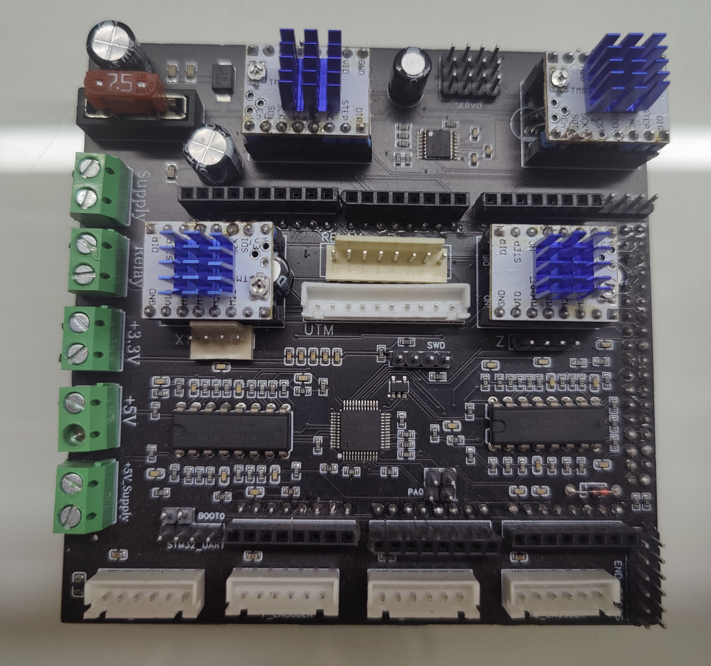
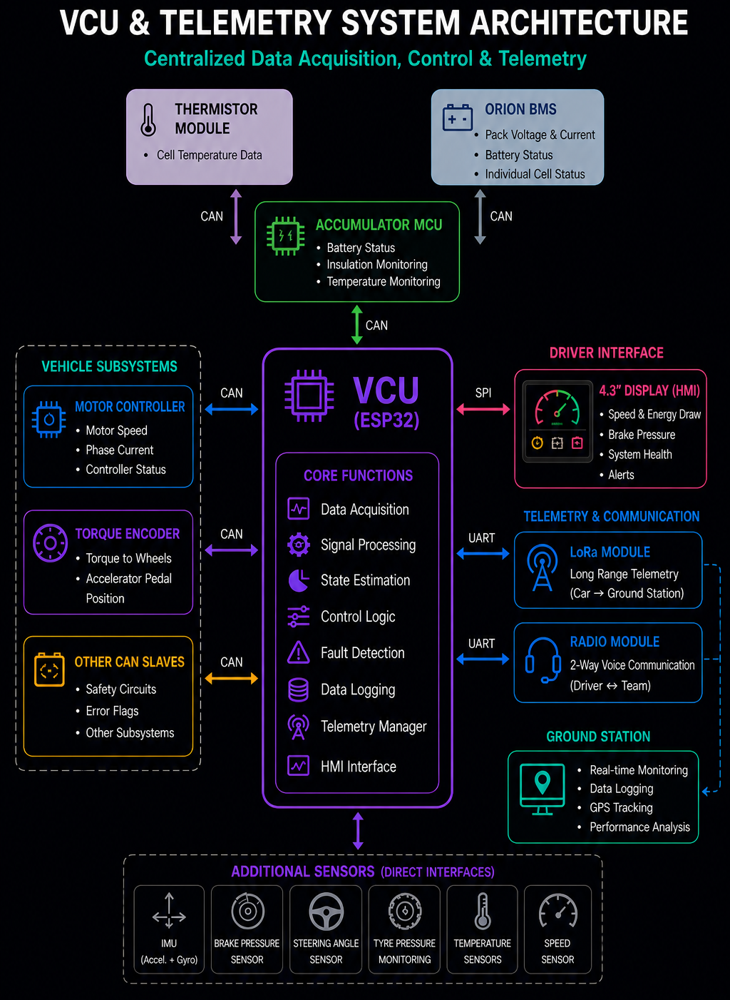
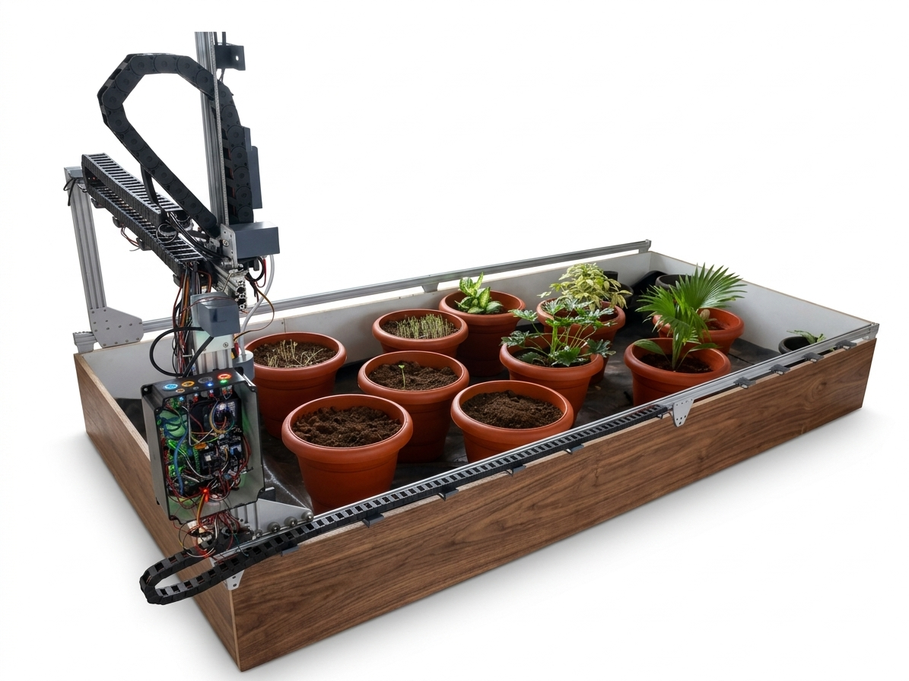
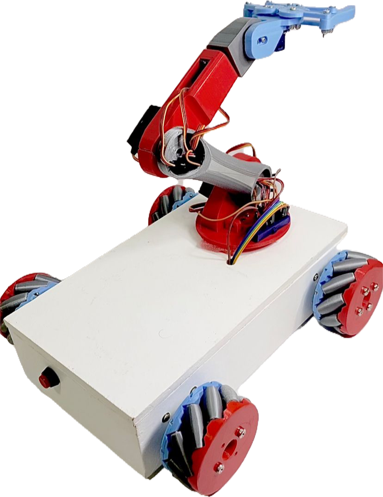

// 003
Projects
Publications
WareOdo — Landmark-Assisted Odometry Correction for Indoor Robots

Developed a landmark-assisted odometry correction framework for indoor mobile robots, addressing long-term drift in localization by fusing wheel encoders, IMU, and monocular vision within an Extended Kalman Filter (EKF). The system leverages warehouse lane markings and fiducial markers (AprilTags) to provide continuous global corrections, enabling robust and accurate localization in structured indoor environments.
- Multi-Sensor Fusion Pipeline — Combined monocular vision, IMU, and wheel encoder data to build a reliable base odometry system for indoor robots
- Landmark-Driven Pose Correction — Leveraged warehouse lane markings and fiducial markers (AprilTags) to provide global pose updates whenever available
- Lane-Based Localization — Extracted lateral offset and heading from lane geometry to stabilize motion, even without a prebuilt lane map
- Marker-Based Absolute Positioning — Used mapped fiducial markers to recover full robot pose and correct long-term drift
- Continuous Real-Time Correction — Applied corrections incrementally during motion, eliminating dependence on delayed loop-closure optimization
- Global Sensor Fusion (EKF) — Fused base odometry with intermittent landmark observations for smooth and consistent state estimation
- Robust in Challenging Conditions — Maintained accuracy under low-texture environments, lighting changes, motion blur, and partial landmark visibility
- Hybrid Landmark Fusion — Combined lane features and fiducial markers to provide complementary corrections depending on environmental visibility
- Continuous Drift Correction — Applied real-time pose corrections throughout motion, avoiding accumulation of global error
- Robustness to Real World Conditions — Maintained performance under lighting variations (darkness, glare, transitions), partial landmark visibility, and feature-poor warehouse corridor environments
- Flexible Deployment — Works without strict marker placement or structured map requirements
- Tested on real warehouse datasets and Gazebo simulation environments
- Evaluated across multi-loop trajectories, curved paths, variable lighting conditions
- Industry validation in collaboration with Accio Robotics
Outcome: Delivered a scalable and robust localization framework that significantly improves odometry accuracy in structured indoor environments, while remaining computationally efficient and deployable on low-cost robotic platforms.
Formula Student Electric Race Car

Project Overview — Complete Electrical Architecture
Led the end-to-end design, development, and validation of the complete electrical system for a Formula Student electric race car. The system encompassed high-voltage energy storage, low-voltage safety-critical circuits, and embedded vehicle control systems, designed to operate reliably under high-performance automotive conditions while complying with strict Formula Student EV regulations.
The vehicle successfully cleared Electrical Technical Inspection at Formula Bharat in its debut year, validating both design integrity and system robustness.
Accumulator Architecture & Design
Designed a 72V nominal (84V max) lithium-ion accumulator. Configuration: 2 × 10s10p (200 cells), 42Ah capacity, 200A maximum discharge current.
- Accumulator Isolation Relays (AIRs)
- Battery Management System (BMS)
- Voltage and Current Sensors
- High-speed fuse protection — 200A, 40kA interrupt rating
- High-voltage connectors and busbars
- Required safety circuits and control electronics
Precharge Circuitry

The precharge circuit is a critical part of the high-voltage (HV) system. Its primary function is to safely charge the DC-link capacitors in the motor controller before fully connecting the battery, preventing large inrush currents that could damage components or weld relay contacts.
At a high level, the circuit allows current to flow through a precharge resistor before closing the main relays (AIRs). Once the voltage across the motor controller matches the accumulator voltage within a defined threshold, the main relays are closed, completing a safe transition to full power operation.
The system is implemented as a hardware-driven safety circuit.
- Mixed HV/LV design: As the circuit interfaces with both high-voltage and low-voltage domains, strict PCB spacing and isolation requirements were followed in accordance with the rules.
- Conformal coating was applied to further enhance insulation reliability and provide environmental protection
Voltage validation: Continuously monitors the voltage difference between the accumulator and motor controller to confirm successful precharge before closing the AIRs
TSAL — Tractive System Active Light

The Tractive System Active Light (TSAL) is a key safety feature in Formula Student electric vehicles. It provides a clear visual indication of the car's HV & LV system status to drivers, team members, and track officials — ensuring the vehicle is handled safely at all times.
At its simplest, the TSAL communicates whether the car is "safe" or "live": a flashing red light indicates that high voltage is present and the car may be capable of motion. A solid green light indicates that only the low-voltage (LV) system is active and the vehicle is electrically safe.
While this behavior appears straightforward, the underlying implementation is a complex fully standalone, analog safety circuit — no microcontroller dependency — designed for high reliability.
- Independent HV/LV indication: The high-voltage (red) and low-voltage (green) detection and signaling circuitry is fully independent, ensuring robust operation and effective fault isolation
- Voltage sensing: Voltage is monitored at multiple critical points — inside the accumulator and at the motor controller — to verify state of voltage across the HV path
- Relay state validation: In addition to voltage sensing, the system checks the mechanical state of HV relays (AIRs and precharge relay), comparing intended vs actual relay state to detect faults like welded contacts
- FMEA-driven fault handling: Designed with failure modes in mind; the system ensures that abnormal or unsafe conditions are clearly and reliably indicated
BSPD — Brake System Plausibility Device

The Brake System Plausibility Device (BSPD) is a critical safety system in Formula Student electric vehicles that ensures the car does not accelerate while under heavy braking — preventing unintended or unsafe behavior.
At a high level, the BSPD continuously checks for a plausibility condition: if the driver is applying significant brake pressure while high motor torque (>5 kW power) is being delivered, it is considered an unsafe or fault condition. In such a case, the BSPD intervenes by shutting down the tractive system, bringing the vehicle to a safe state.
The BSPD is implemented as a fully standalone, analog safety circuit — no microcontroller dependency. It monitors two key inputs — the Brake Pressure Sensor (BPS) and a current sensor (used to estimate motor power) — and triggers a shutdown (by opening the SDC) when an unsafe condition is detected.
Thermistor Expansion Module (TEM)

The rules require that a minimum of 30% of the cells (60 cells in our case) be monitored using temperature sensors. Since the BMS could monitor only 4 cells directly, an external Thermistor Expansion Module (TEM) was necessary. The commercially available module from Orion BMS was cost-prohibitive, so we designed and built our own solution.
Our TEM uses eight 8:1 multiplexers to monitor 64 NTC thermistors, with an ESP32 handling data acquisition and processing. The module communicates with the BMS over CAN. We reverse-engineered the original TEM's CAN protocol to replicate the exact message structure, enabling seamless integration with the BMS.
Additionally, the TEM is connected to the Shutdown Circuit (SDC), allowing it to immediately disconnect the high-voltage system if temperature readings fall outside a defined safe range or if a sensor fails to provide a valid reading due to any abnormality — ensuring a fast and reliable safety response.
The design follows a fail-safe, FMEA-driven approach, with all input signals classified as System Critical Signals (SCS). This ensures that any fault condition leads to a safe outcome
VCU & Real-Time Telemetry System
A centralized Vehicle Control Unit (VCU) designed for a Formula Student electric race car to enable real-time data acquisition, system monitoring, control coordination and telemetry.
- ESP32-based VCU as the central processing and control hub
- Acquires data from 10+ sensors and multiple vehicle subsystems
- Integrated communication with BMS, motor controller and other CAN slaves
- Real-time telemetry using LoRa and 2-way voice communication
- Driver-focused HMI for critical information display
- Ground station interface for monitoring, logging and performance analysis
Outcome: The system provides a robust, scalable and reliable architecture for real-time vehicle monitoring, control and telemetry, enabling informed decision making on track and in the pits.

Other Projects
Gantry-Based Autonomous Farming Robot with IoT Monitoring
- Built a CNC-based farming robot to enable automated planting, watering, and monitoring of crops using a Cartesian robotic system
- Implemented a multi-axis motion control system to precisely position tools for seeding, irrigation, and plant care across a defined workspace
- Designed the electronics architecture and developed a custom PCB, integrating environmental and soil sensors to monitor parameters such as soil moisture and plant conditions for data-driven automated operations
- Enabled remote monitoring and control via a web-based interface, leveraging IoT principles for real-time system interaction

Omnidirectional Robot Platform
- Secured Second Prize among 78 teams; awarded a cash prize for the project
- Designed and built an Omnidirectional Robot Platform with 3D-printed Mecanum wheels, enabling full 360° motion; implemented multi-mode control (Bluetooth, web interface, RF) and programmed onboard logic for recording and replaying motion sequences, demonstrating robust embedded control automation capabilities
- Demonstrated skills in embedded programming, PCB design, motor control, wireless communication and rapid hardware prototyping

// 004
Get In Touch
I’m always open to discussing new opportunities, collaborations, or interesting engineering problems. Whether it’s embedded systems, robotics, or motorsport electronics — feel free to reach out.
Let’s build something meaningful.
Based in Bangalore, India. Happy to connect.